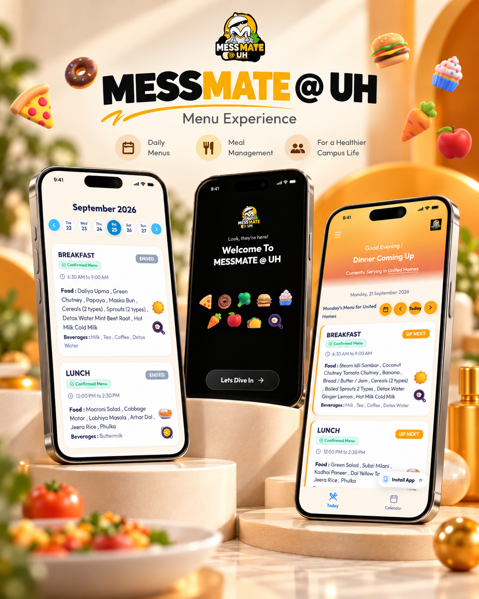

FEATURED PROJECT · 2026
MessMate
The planned menu. The actual meal. One clear answer.
A mobile-first mess menu platform for United Homes, Karnavati University. Students see meal timings and confirmed menus; managers publish changes that sync in real time.
 React
React Firebase
Firebase Vite
Vite- PWA